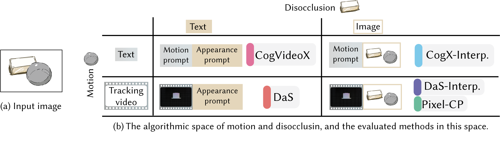

VideoReveal Benchmark
To systematically study motion and disocclusion control in image-to-video generation, we introduce VideoReveal. The benchmark contains 32 modeled scenes and 5 captured scenes spanning rigid/deformable motion and static/dynamic disoccluded content. Each sample provides the rendered sequence, tracking guidance, disocclusion masks, and associated prompts.
Building scenes
in Blender.
Take a closer look at the modeling workflow behind the synthetic scenes.
Download the modeling videoAnnotating
the scenes.
Explore the annotation workflow in this video demonstration.
Download the annotation videoEvaluation Setup
Starting from an input image, we organize representative image-to-video methods in a 2×2 design space: motion is controlled by either text or tracking, while newly revealed content is controlled by either text or a reference image. We evaluate five representative methods across this space: CogVideoX, CogVideoX-Interp., DiffusionAsShader, DaS-Interp., and Pixel-CP.

Motion meets revelation.
Explore the same scene across guidance signals and five control methods. Use the player controls to inspect each result.
Citation
@article{Qi2026VideoReveal,
title = {A Study of the Design Space of Motion and Disocclusion Control in Video Generation},
author = {Qi, Anran and Li, Changjian and Bousseau, Adrien and Mitra, Niloy J.},
journal = {Computer Graphics Forum},
year = {2026},
note = {Pacific Graphics 2026}
}References
- , "Diffusion as shader: 3d-aware video diffusion for versatile video generation control.", Siggraph 2025.
- , "CogVideoX-Interpolation." , GitHub repository, 2025. Accessed June 1, 2026. Project Repository .